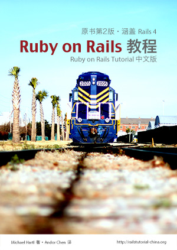

- 原书名：
- Ruby on Rails Tutorial
- 作者：
- [美] Michael Hartl
- 译者：
- Andor Chen
- Ruby：
- 2.0.0
- Rails：
- 4.0.2
- 售价：
- $9.90
- 页数：
- 460
- 装帧：
- 电子书
- 格式：
- PDF, ePub, Mobi, HTML
购买电子书
- 出售行为已获原作者许可；
- 只支持 Paypal 支付；
- 电子书包含三种格式：PDF、EPub 和 Mobi；
- 购买后，错误修正等更新免费获取（通过邮件通知），不再收费；
官方公告
I’m pleased to announce the availability of a Chinese translation of the Ruby on Rails Tutorial. I’d like to thank translator Andor Chen for his outstanding work. I deserve none of the credit; Andor reached out to me and asked if it was OK to translate the book, and I happily agreed. (All I did was contribute a short preface.) As with the English version, the Chinese translation is available for free online as HTML; with my blessing, Andor is also offering ebook sales of the translation, the proceeds of which go directly to him. If you are a Chinese speaker, please check it out!